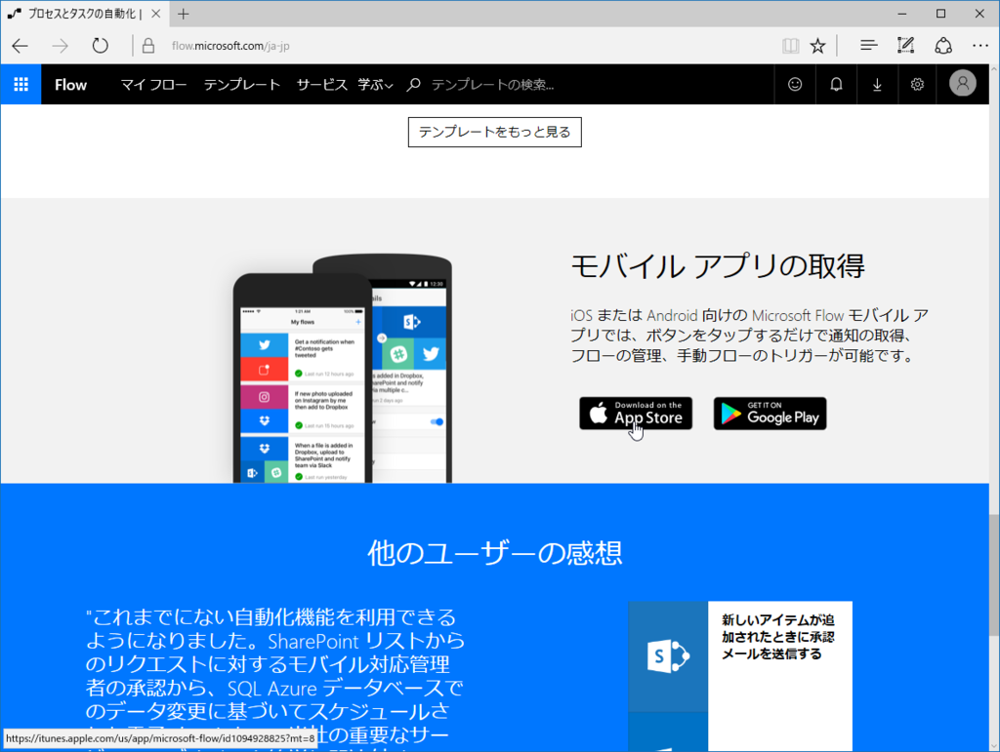

Microsoft Flow × だるやなぎ API で俺さまの年齢をつぶやく
公開日：
Microsoft Flow は
- API にアクセスして
- データを解析し
- それをツイートする
といったこと（ロジックフローの連鎖）を簡単に実現できるサービスです。“あーして、こうして、そんでもってこうする！”みたいなのをダイアグラム的に書けるわけですね。あとでスクリーンショットをのせておくので見てほしいのですが、割とビジュアルでわかりやすいです。
この Microsoft Flow はスタンドアロンで
- 定期的に
- フィードが配信されたら
みたいなトリガー（処理のきっかけ）を使うこともできますが、モバイルアプリを利用すれば「このボタンを押すと」をトリガーにすることができます。
今回は だるやなぎ API を利用してモバイルアプリから年齢をつぶやく例を紹介します。毎日、僕の年齢を Twitter につぶやけて、とても便利です。
だるやなぎ API
だるやなぎ API http://api.daruyanagi.jp/ は、だるやなぎのさまざまな情報を取得できる API です。たとえば、http://api.daruyanagi.jp/?format=xml を叩くと、
<object> <Name>YANAGI, Hidetoshi</Name> <NickName>daruyanagi</NickName> <Birth>1980-04-20T09:00:00</Birth> <DateTime>1998-04-20T09:00:00</DateTime> <Elapsed> <Ticks>5679936000000000</Ticks> <Days>6574</Days> <Hours>0</Hours> <Milliseconds>0</Milliseconds> <Minutes>0</Minutes> <Seconds>0</Seconds> <TotalDays>6574</TotalDays> <TotalHours>157776</TotalHours> <TotalMilliseconds>567993600000</TotalMilliseconds> <TotalMinutes>9466560</TotalMinutes> <TotalSeconds>567993600</TotalSeconds> </Elapsed> <Age>18</Age> <AgeAtLastBirthday>18</AgeAtLastBirthday> <AgeByCalendarYear>19</AgeByCalendarYear> <Married>false</Married> <Job>Oil King</Job> <Photos> https://onedrive.live.com/?authkey=%21ALMyzgcuZ67AAng&id=2260696B6A4680D7%2118945&cid=2260696B6A4680D7 </Photos> <Place> <Name>愛媛 松山市</Name> <SouthWest> <Latitude>33.687285</Latitude> <Longitude>132.491125</Longitude> </SouthWest> <NorthEast> <Latitude>34.073779</Latitude> <Longitude>132.926666</Longitude> </NorthEast> </Place> </object>
というデータが返ってきます。年齢や職業も一発ですね！ JSON 形式でも取得できるんですよ。
ざっとした使い方

ますは https://flow.microsoft.com/ja-jp/ からアプリをダウンロードします。iOS 版と Android 版があります。Windows 10 Mobile？……知らない子ですね。
ダウンロードしたら、まずなにかフローを作成してみてください。わかんなかったらテンプレートがいっぱいあるので、なにか選んでみましょう。たとえばこの“上司に今日は在宅勤務にするというメールを送信する”なんて便利じゃないでしょうか。これを改造すれば、遅刻メールがワンボタンで送れるようになります。
Microsoft Flow に API を食わせる
フローはモバイルアプリでも作れますが、個人的にはオンラインで作る方が好きです。画面がでかいので。
今回作ったフローはこんな感じです。シンプルですね！ ほんとうは API が 200（成功）以外のレスポンスを返すことも考慮した方がよいでしょう。失敗したらメールで通知、みたいなのとか、どうでしょう？
ポイントとなるのは、HTTP アクセスと――

JSON の解析でしょうか。

JSON の解析は一見難しそうですけど、サンプルの JSON データを一度食べさせると、それを解析し、他の処理に使いまわせるようにしてくれます。めっちゃ簡単ですね。
だいたいこんな感じです。変数がビジュアルな感じで、わかりやすいと思います。


フローを保存するとアプリにボタンが現れるので、さっそく押してみましょう。
daruyanagi は 18 歳無職独身男性です。今日まで 6574 日生きてきました。ごめんなさい。 https://t.co/5FcERn6wgP
— だるやなぎドロップアウト (@daruyanagi) 2017年3月31日
ちゃんと 18歳 とツイートされました！
補足
- JSON データの解析・変数化は、階層まで考慮してくれません。異なる階層で同じ名前の変数があるとちょっと厄介（見分けがつかない
- Twitter に紐づけられるアカウントの数は 2 つまでのようです。無料アカウントで3つ目を登録するとエラーがでます（言い忘れていましたが、MicrosoftFlow は基本タダです。ただし、回数などに制限があります……が、個人利用ならそんなに気にしなくていいかな）
- Twitter でつぶやくテキストは自由に編集できますが
- スパム防止のために @ は削除されます（メンションできません
- そもそも @ を使うとフローが壊れるっぽい
P.S.
この記事は 4月1日の午前中 に作成されました。